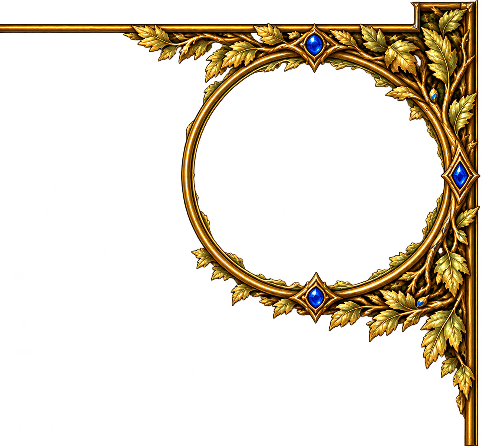

Birchhaven
Spelet är installerat och klart. Har du spelat tidigare? Stäng den gamla starten och välj ”Ta över gammal sparning”. Välj sedan mappen med Start-Birchhaven.cmd.
F10: Bildinställningar · F11: Helskärm

Spelet är installerat och klart. Har du spelat tidigare? Stäng den gamla starten och välj ”Ta över gammal sparning”. Välj sedan mappen med Start-Birchhaven.cmd.
F10: Bildinställningar · F11: Helskärm